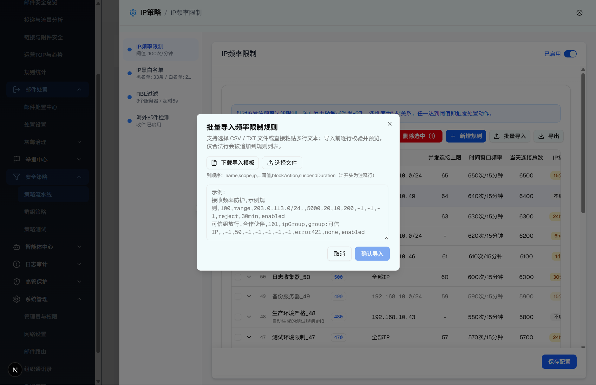
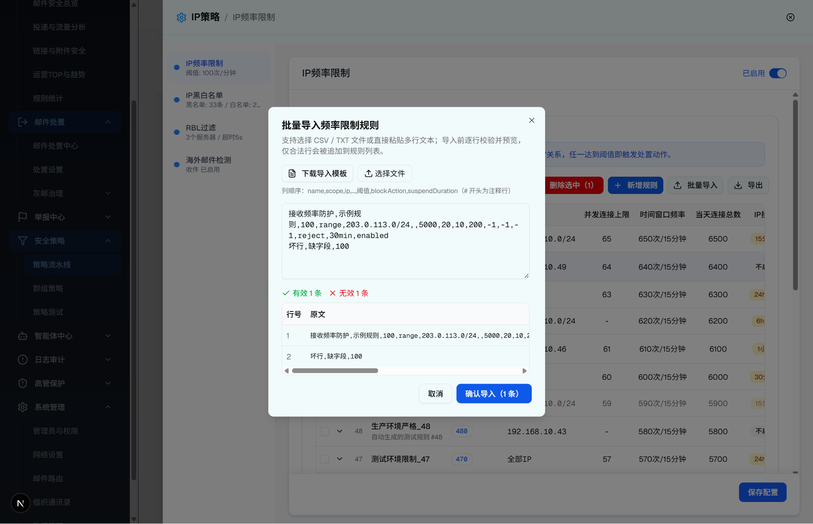

| 所属组件 | 2.3 IP频率限制规则列表模块 |
| 主文件 | index.html |
| 层级编号 | 层级 6 / 8 |
| 触发路径 | 层级0 规则列表 -> 点击「批量导入」-> 打开导入 Dialog -> 选择文件 / 粘贴文本触发实时解析预览 |
| demo 组件 | ip-frequency-limit-module.tsx（showImportDialog Dialog）+ lib/frequency-rule-io.ts（parseImportText/buildImportTemplate/recordsToCsv 等） |
| 浏览器验证 | agent-browser，2026-07-20，视口 1440×1000 |
弹窗为 Dialog max-w-3xl、max-h-[85vh] 可滚动。标题「批量导入频率限制规则」，描述「支持选择 CSV / TXT 文件或直接粘贴多行文本；导入前逐行校验并预览，仅合法行会被追加到规则列表。」

| 序号 | 元素类型 | 文案/标签 | 默认值 | 校验/行为 |
|---|---|---|---|---|
| 1 | Button（下载导入模板） | 下载导入模板（FileText 图标） | - | 下载带 # 注释行的 CSV 模板（列顺序说明） |
| 2 | file input（选择文件） | 选择文件（Upload 图标） | accept=".csv,.txt" | 读取文本并触发解析；e.target.value 清空允许重复选同一文件 |
| 3 | 说明文本 | 列顺序：name,scope,ip,...,阈值,blockAction,suspendDuration（# 开头为注释行） | - | 只读提示 |
| 4 | Textarea | 示例占位（2 行示例） | 空 | onChange 实时调用 parseImportText 解析；空则清空结果 |
| 5 | Button（取消） | 取消 | - | 关闭弹窗并清空文本与解析结果 |
| 6 | Button（确认导入） | 确认导入 / 确认导入（N 条） | disabled | 仅当 importResult.validCount > 0 可用；点击追加合法行、回第一页、显示成功横幅 |
在文本域输入/粘贴内容后即时逐行校验，无需点击。实测输入 1 行合法 + 1 行缺字段，结果如下：
✓ 有效 1 条 ✗ 无效 1 条
| 行号 | 原文 | 状态 | 错误原因 |
|---|---|---|---|
| 1 | 接收频率防护,示例规则,100,range,203.0.113.0/24,,5000,20,10,200,-1,-1,-1,reject,30min,enabled | 有效 | - |
| 2 | 坏行,缺字段,100 | 无效 | 字段数不足 |
确认按钮随之为「确认导入（1 条）」且可点击。

| 项 | 浏览器实际行为 | 来源 |
|---|---|---|
| 有效/无效统计 | 绿色「✓有效 N 条」+ 红色「✗无效 N 条」 | importResult.validCount / invalidCount |
| 预览表列 | 行号（60px）/ 原文（mono 换行）/ 状态（有效绿 Badge / 无效红 Badge）/ 错误原因（红字 join("；")） | importResult.rows |
| 空数据行 | 显示「无可解析的数据行」 | rows.length === 0 |
| 确认导入禁用条件 | !importResult || validCount === 0 时禁用 | handleConfirmImport 前置 |
| 导入成功后 | 仅追加合法行、setCurrentPage(1)、显示绿色内联横幅「成功导入 N 条频率限制规则」，4s 后自动消失（全局未挂 Toaster） | handleConfirmImport |
| 比对项 | demo 实际 DOM | 规格记录 | 是否一致 |
|---|---|---|---|
| 弹窗定位 | [role="dialog"] 且文本含「批量导入频率限制规则」 | 同左（outerLen 5705） | ✅ |
| 描述文案 | 「支持选择 CSV / TXT 文件或直接粘贴多行文本…」 | 同左 | ✅ |
| 解析统计 | 有效 1 条 / 无效 1 条 | 同左 | ✅ |
| 确认按钮 | 「确认导入（1 条）」，disabled=false | 同左 | ✅ |
| 预览表行数 | tbody 2 行 | 同左 | ✅ |
| 截图校验 | 15/16 截图可见两态 | 本节引用同一组截图 | ✅ |